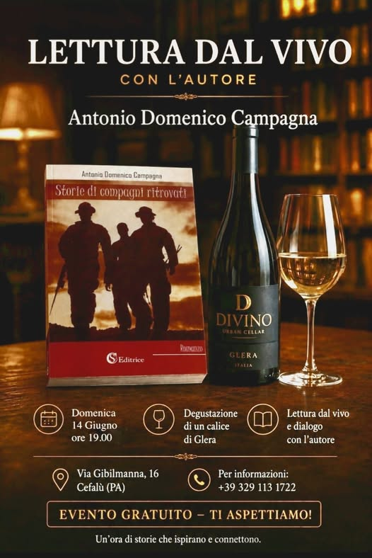

Un’ora di storie e un calice di Glera

Ciao! Siamo qui, da Divino, a proporre uno speciale evento che vi permetterà di trascorrere un’ora in compagnia, bevendo, ascoltando e commentando storie.
Domenica 14 giugno, incontro con l’autore Antonio Campagna: una lettura dal vivo a partire dalla sua raccolta Storie di compagni ritrovati (CSA Editrice, 2020). L’autore legge alcuni brani, li commentiamo insieme e poi si apre alle domande.
Sono storie di legami, di relazioni e, perché no, di vita: una vita che ci mette sempre in discussione e non smette di sorprenderci.
I dettagli
Domenica 14 giugno alle ore 19:00, in Via Gibilmanna 16, Cefalù (PA). Alla lettura è abbinata la degustazione di un calice di Glera. Evento gratuito, della durata di circa un’ora. Per informazioni: +39 329 113 1722.
Storie che ispirano e connettono.
Una cantina è un posto ragionevole per una cosa del genere. Le persone sono già sedute, hanno già qualcosa in mano e sono già disposte ad ascoltare.
Storie che ispirano e connettono
Via Gibilmanna 16, Cefalù. Per informazioni su questa e altre serate: +39 329 113 1722.
Dove siamo